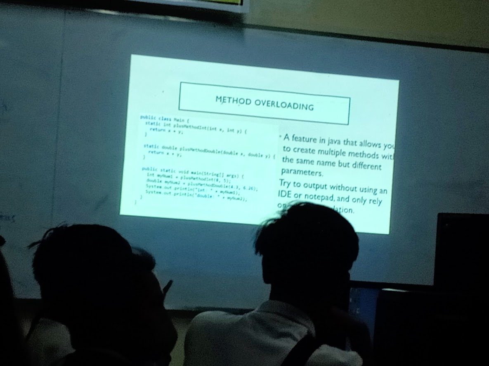

About Me!
PERSONAL INFO
Name: Cyrill Aljaylen S. Libiran
Date of birth:May 12 2007
Email:libirancj12@gmail.com
Place of birth: Pampanga
Hello! My name is Cyrill Libiran, and I am currently pursuing a Bachelor of Science in Information Technology, specializing in Web Development, at the University of the Cordilleras. Ever since I was a child, I have been immersed in the world of technology, driven by a lifelong passion for playing games and exploring how digital systems work.
I hope my time at UC is filled with memorable experiences, great connections, and valuable knowledge that will prepare me for my future career.
ACADEMIC BACKGROUND
-
Former College
University of Baguio | 2025 – 2026
-
Senior High School
Data Center College of the Philipines | 2023 – 2025
-
Junior High School
Rizal National Highschool | 2019 – 2023
-
Elementary
Sts Peter and Paul Learning Center | 2013 – 2019
